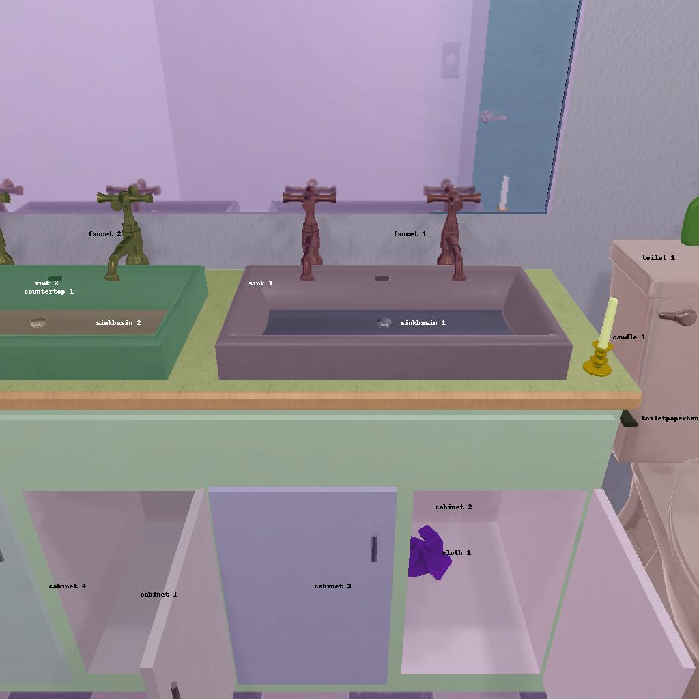

---------------------------------------------------------task: 9---------------------------------------------------------
--------------------------------------------------------------------------------------------------------------------------------------------------------------------
--------------------------------------------------------------------------------------------------------------------------------------------------------------------
Step:--------------------------------------------------------------------------6-------------------------------------------------------------------------------
----------------------------------------
VLM Prompt:
Image1:
Image2:
**Instruction**
1. Analyze the provided image to identify all visible household objects, focusing on those relevant to the task description "put some soapbottle on toilet."
2. Use the analysis of the image and the task hint "The agent must find an object of the desired type, pick it up, find the correct location to place it, and put it down there." to answer the question: what is the most reasonable action in the choices for the task description "put some soapbottle on toilet"?
4. Decide and write the answer using the template: The answer is: (i): , where i is the real number. If there is no desired object in the image, search every place based on **Initial Observation** to find the object. And if no one is exactly correct, choose a similar answer.
**Initial Observation**
You are in the middle of a room. Looking quickly around you, you can see bathtub (1), bathtubbasin (1), toilet (1), cabinet (1-4), sink (1-2), countertop (1), sinkbasin (1-2), toiletpaperhanger (1), towelholder (1), garbagecan (1), handtowelholder (1)
**Answer Choices**
(1): go to bathtub 1
(2): go to bathtubbasin 1
(3): go to toilet 1
(4): go to cabinet 2
(5): go to cabinet 3
(6): go to sink 1
(7): go to sink 2
(8): go to countertop 1
(9): go to sinkbasin 1
(10): go to sinkbasin 2
(11): go to toiletpaperhanger 1
(12): go to towelholder 1
(13): go to garbagecan 1
(14): go to handtowelholder 1
(15): open cabinet 4
(16): close cabinet 4
(17): examine cabinet 4
**Answer**
Let's think step by step by following the instructions.
----------------------------------------
----------------------------------------
Original Response:
Firstly, we need to identify all visible household objects relevant to the task "put some soapbottle on toilet." In the image, we can see a toilet, two sinks with sink basins, cabinets, a countertop, and various other bathroom fixtures. However, there is no visible soap bottle in the image.
Given the task description and the hint provided, the agent must find an object of the desired type (soap bottle), pick it up, find the correct location (toilet), and put it down there.
Since there is no soap bottle visible in the image, we must search every place based on the Initial Observation to find the object. The most likely place to find a soap bottle in a bathroom setting would be in or on a cabinet or possibly on the countertop.
Examining the image, we can see that cabinet 4 is slightly open, which might indicate that the soap bottle is inside. Therefore, the most reasonable action to find the soap bottle would be to examine cabinet 4.
The answer is: (17): examine cabinet 4.
----------------------------------------
----------------------------------------
>>> Refine Original VLM Response and Get Pure Action: examine cabinet 4
----------------------------------------
-----------------------------------------------------------------
Running time: 11.42525315284729 seconds
Total Money: 3.8650499999999988
-----------------------------------------------------------------
-----------------------------------------------------------------
Text Observation:On the cabinet 4, you see a faucet 1, a faucet 2, a cloth 1, a candle 1, and a spraybottle 1.
-----------------------------------------------------------------
UNSUCCEED